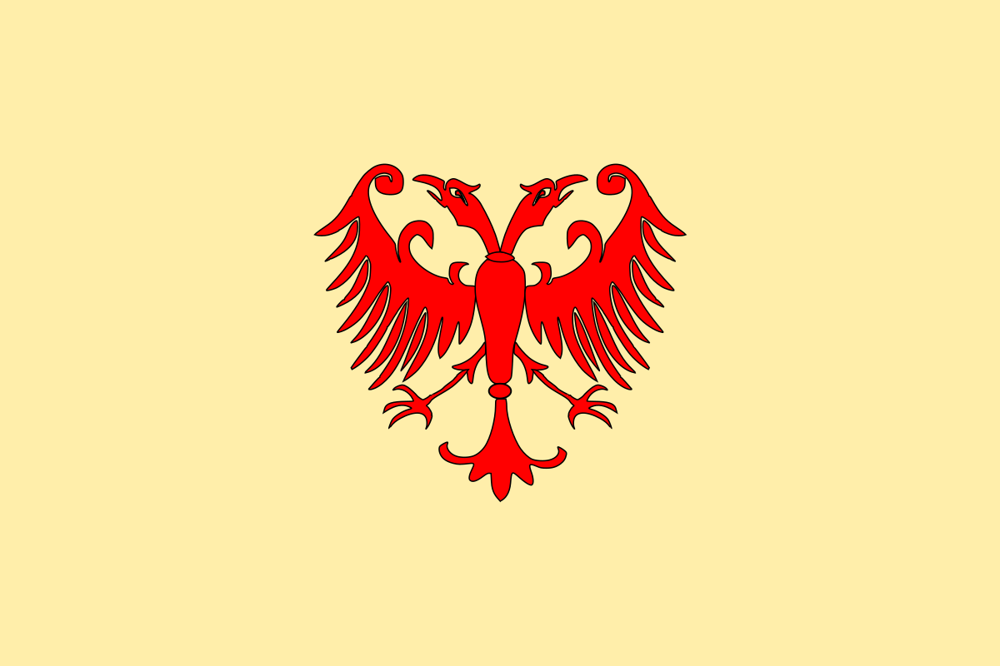

Car Dušan
The main icon of the brand is the reinterpreted face of the famous medieval Serbian Emperor Dušan. As there are no credible illustrations except for a few church frescoes, the face is reinterpreted liberally, in a sturdy way, with a lowered brow and almost a brash expression, reinforcing the Emperors nickname and most recognizable trait, might.
Colorway
The colors are derived from the flag of the medieval Serbian empire
